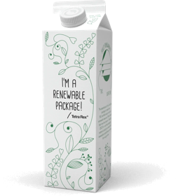

I CORRIDA DA GUARDA MUNICIPALMARINGÁ · PARANÁ · 30/08/2026
Secretaria deSegurança Municipal
Prova para toda a família: do atleta competitivo à criançada da Corrida Kids. Inscrições do 1º lote até 17/08/2026 (ou enquanto houver vagas).
Cronometragem oficial com chip, classificação geral e por faixa etária, troféus para os primeiros colocados.
Para familiares e comunidade — sem cronometragem, no seu ritmo, com direito a kit e medalha de participação.
Crianças e adolescentes na pista, com toda a segurança da GCM e medalha para cada pequeno atleta.
Sub 7 · 100 m Sub 9 · 150 m
Sub 11 · 200 m Sub 14 · 400 m
Trajeto competitivo pelas vias centrais, com cronometragem oficial. Veja o mapa completo com o traçado da prova.
VER MAPA DO PERCURSO 7 KMTrajeto participativo para toda a família, no seu ritmo. Confira o mapa oficial do percurso de 3 quilômetros.
VER MAPA DO PERCURSO 3 KMModalidades, categorias, inscrições, premiação, retirada de kit e todas as regras da prova. Leia antes de se inscrever.
BAIXAR REGULAMENTO (PDF)Criada para proteger os bens, serviços e instalações do Município, a GCM cresceu junto com a cidade — e hoje está nas escolas, nas ruas, no videomonitoramento e no coração da comunidade maringaense.
De autoria do vereador William Gentil, a lei criou a base legal para os eventos institucionais da Guarda, aproximando a corporação da população que ela protege.
A Lei nº 12.163/2026 aprimorou a legislação e instituiu oficialmente a Corrida da Guarda Municipal, regulamentada em seguida pelo Decreto nº 937/2026, assinado pelo Prefeito Silvio Barros, na gestão do Secretário de Segurança Municipal, Dr. Luiz Cláudio Alves.
No Auditório Hélio Moreira, a Prefeitura e a Guarda Municipal apresentaram oficialmente a I Corrida da Guarda Municipal de Maringá à cidade. Nove dias depois, em 12/06, as inscrições abriram — e a resposta da população foi imediata.
A I Corrida da Guarda Municipal celebra o aniversário de 19 anos da corporação com esporte, família e solidariedade: cada inscrição doa 1 litro de leite para ações sociais do Município. Você faz parte dessa história.

Cada inscrição inclui a doação de 1 litro de leite, destinado ao Programa PRA SOMAR, da Prefeitura de Maringá. Correndo ou caminhando, você ajuda quem mais precisa.
Concentração a partir das 6h00 · Largada às 7h30 em ponto. Percursos pelas vias centrais com segurança total da Guarda Municipal, em conjunto com a Semob.


O que os veículos de Maringá e região estão publicando sobre a I Corrida da Guarda Municipal.
Empresas podem patrocinar o evento pelo Chamamento Público nº 001/2026-SSM — fornecimento de bens e serviços com contrapartida de visibilidade em camisetas, kits, pórtico e mídia. Edital publicado no Diário Oficial nº 4877 (13/07/2026).